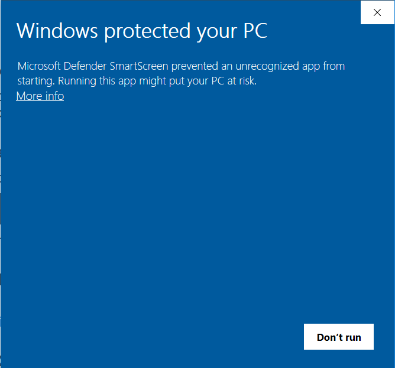
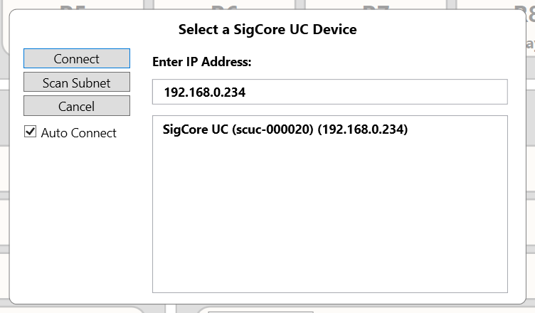

Getting Started
Initial Setup
1. Power the Device
Remove the SigCore UC from the box and apply power. The unit boots automatically and is ready for connection within a few seconds.
2. Install the Control Panel
Download the latest release of the Control Panel application:
Download the Control Panel Setup
Installer Security Prompt (Windows SmartScreen)
When running the installer for the first time, Windows may display a SmartScreen warning. This occurs when software has not yet established a reputation with Microsoft’s trust service.

- Click More info.
- Select Run anyway.
The installer will then start normally.
3. Launch the Application
Open the Control Panel. The connection window will appear automatically and list any SigCore UC devices discovered on your active network interfaces.

4. Select a Connection
If your PC has both Wi-Fi and Ethernet enabled, two discovery paths may appear. The device will show up on whichever network can reach it.
When your device appears in the list, select it and click Connect.
5. If the Device Does Not Appear
- Click Scan Subnet to search your local network range.
- On corporate or restricted networks, automatic discovery may be blocked. In these cases, obtain a fixed IP address from your IT department.
- Provide the device's MAC Address (printed on the label) and have IT assign a permanent address.
- Enter the assigned IP manually in the Enter IP Address field.
6. Auto Connect
Enable Auto Connect if you want the Control Panel to automatically reconnect to this device each time the application starts.
Next Steps
After connecting, the Control Panel will display live system status and all I/O channels. You may then configure relays, read inputs, adjust analog outputs, and perform calibration tasks.